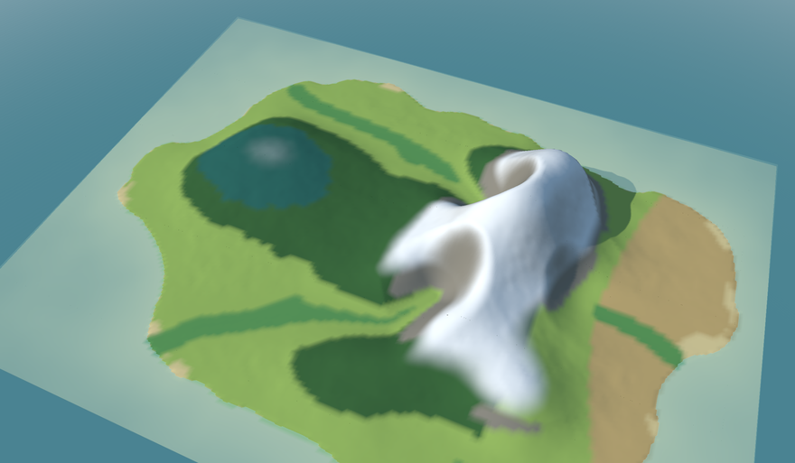

The climate plugin gives a simulated world its weather: how warm, how wet, where it snows, and which landscape (biome) each place has: forest, meadow, steppe, rock.

From the height of the ground and the wind it works out temperature and rain, then sorts every place into a biome by rules you write. A second rule turns the year: snow comes down in winter and leaves turn in autumn.
Pick the line that sounds like you.
| If you… | Read | Time |
|---|---|---|
| are new and want to see it work | 🏴☠️ The quest: an island’s weather and biomes, in 5 levels | 45 min |
| want to run its example | Getting started | 10 min |
| want to know how the climate is worked out | The model | 15 min |
| are looking up a parameter | Rules reference | — |
The menu on the left (or the files in docs/) follows this order.
Start
Understand
Reference
climate rule works it out once (and
again only when the world’s ground changes, as the terrain’s erosion rule makes it), and the
seasons rule moves only the snow line and the foliage tint, not the temperature and
precipitation fields. There is no weather yet (no single storms, no daily rain).examples/mountain.yaml, works out the climate of a synthetic
mountain without the seasons; the pages show the rest as rules to copy.| Word | What it means |
|---|---|
| Terminal | The window where you type commands: Terminal on macOS and Linux, PowerShell on Windows. |
| Repository | A project’s folder of files, kept on GitHub. git clone <address> copies it to your computer. |
| Plugin | A small program that adds one ability to another: here, one kind of simulation each. |
| Rules file | A text file (YAML) that says which plugins to use, with which numbers, for how long: no programming needed. |
| Field | A grid of numbers laid over the world: the height of every spot, its temperature, its rain. |
| Quest | The tutorial of these docs: short levels, each ending with something that works and an achievement. |
Go Climate Simulator is one of a family of small projects that work together:
| Project | What it does |
|---|---|
| Go Renderer | draws 3D scenes and flat interfaces |
| Go UI | buttons, panels and whole applications |
| Go UI for Android | Android apps that look like Android’s own |
| Go Sound | sound and music |
| Go Scene Builder | 3D scenes from a flat map |
| Go Simulator | simulations that change a scene |
| Go Terrain Simulator | ground shaped by rivers |
| Go Climate Simulator (this one) | weather and biomes |
| Go Flora Simulator | forests that grow |
| Go Urban Simulator | towns that grow |
| Go Motion Simulator | a scene that moves |
| Go for 3DS | Go on the Nintendo 3DS |
⚠️ All of them are educational experiments, written with an AI assistant and pending review by their author: good for learning and playing, not for production.